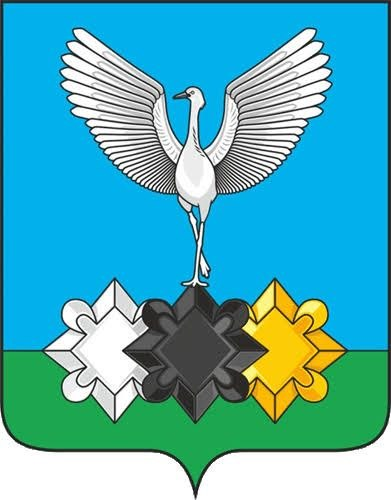

Сезон 2026 - Чульман
Место выезда

Нашивка

Командный состав
- Командир — Кощеев Петр
- Комиссар — Орехова (Скороходова) Полина
- Мастер — Кобзев Игорь
Бойцы
- Артемьев Кирилл
- Белявцев Илья
- Варгасова Анжелика
- Игнатов Олег
- Клинаев Виктор
- Коровина Дарья
- Ляшевский Георгий
- Мельников Роман
- Меньшенин Андрей
- Мовсисян Арсений
- Мордвинцев Юрий
- Содолевская Мария
- Федченко Алексей
- Хоботов Илья
- Цветков Валерий
- Широков Николай
О сезоне
Работодатель: ООО «Энерго СК».
Объект: Южно-Якутская теплоэлектростанция.
Виды работ: подмастерье электромонтажников, прокладка кабелей, копка траншей.
На объекте вместе с Монолитом 6 Питерских отрядов: ССО "Орион", ССО "Рубеж", ССО "Пятница", ССО "Польза", ССО "Рок", ССО "Антей".
Фотоальбом